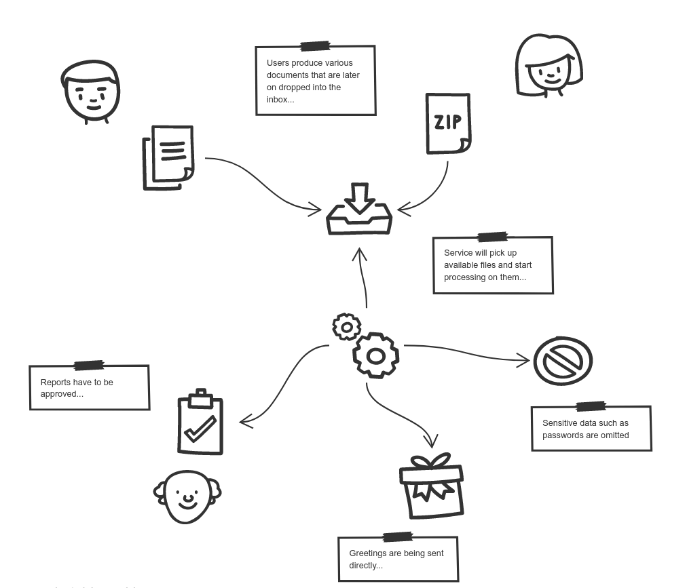

Document processor
Document processor example illustrates batch processing use case that processes documents as either
individual files or archives as soon as they are dropped into the inbox folder.

| Note that this example is currently not equipped with user facing UI |
This example watches a folder (an inbox) for files to be processed, it supports:
-
text files - those with extension
.txt -
archive files - those with extension
.zip
Archive files are expected to contain .txt files only.
Depending which file type is dropped into directory different workflow will be triggered.
Text files are also classified and based on classification different paths are invoked:
-
greetings (text files that starts with
hello) -
reports (text files with length more than 100)
-
confidential (text files that have the file name
password.txt) -
unclassified (all other text files)
Zip file can contain any classification types.
Run it
To run the example as container there is a need to mount a local folder as volume to
be able to easily drop files for processing. To do so, replace LOCAL_DIRECTORY
with an absolute folder path of your local file system.
docker run -e DOCUMENTS_FOLDER=/automatiko/documents -v LOCAL_DIRECTORY:/automatiko/documents -p 8080:8080 automatiko/document-processor
once this is done you can see the fully described service at http://localhost:8080/swagger-ui/#/
| You can open your browser http://localhost:8080/management/processes/ui to visualize your running service |
There are multiple paths that can be taken during given order
Process individual text files image::document-processor-txt.png[]
Process archives and delegates to individual file processing for every item found in the archive image::document-processor-zip.png[]
The happy path
Happy path consists of steps that will lead to successful processing single text file.
Try it
Follow steps in the Details section to see the happy path in action.
Create a text file named say-hello.txt (it can actually be named anything just
need to have .txt extension)
The content of the file should contain word hello and it can contain any other text.
| Keep it short (less than 100 characters) as if this exceed 100 it will be considered as report. |
Copy this file into LOCAL_DIRECTORY folder that was mapped to the container.
Observe both LOCAL_DIRECTORY and container logs to see that file was processed.
The happy archive path
Happy path consists of steps that will lead to successful processing all text
files found in the archive (zip).
Try it
Follow steps in the Details section to see the happy archive path in action.
Create a text file named say-hello.txt (it can actually be named anything just
need to have .txt extension)
The content of the file should contain word hello and it can contain any other text.
| Keep it short (less than 100 characters) as if this exceed 100 it will be considered as report. |
Create another .txt let’s say say-another-hello.txt with again content
that has hello word.
Zip both files into archive.zip and copy this file into LOCAL_DIRECTORY
folder that was mapped to the container.
Observe both LOCAL_DIRECTORY and container logs to see that archive
file was processed and each file of the archive as well.
The report path
Happy path consists of steps that will lead to successful processing of a report file and approval of it’s content.
Try it
Follow steps in the Details section to see the happy path in action.
Create a text file named report.txt (it can actually be named anything just
need to have .txt extension)
The content of the file can be anything and it must be longer than 100 characters.
-
Fetch active instances to be approved
-
Http Method:
GET -
Endpoint:
http://localhost:8080/text
-
complete curl command for this request is as follows
curl -X GET "http://localhost:8080/text" -H "accept: application/json"Note the id attribute of the instance, will be used in the next calls.
-
Fetch approval tasks
-
Http Method:
GET -
Endpoint:
http://localhost:8080/text/ID/tasks
-
complete curl command for this request is as follows
curl -X GET "http://localhost:8080/text/ID/tasks" -H "accept: application/json"| Make note of the id returned from the above request as it will be used to complete the approval task |
-
Approve vacation request
-
Http Method:
POST -
Endpoint:
http://localhost:8080/text/ID/requests/approvalReport/TASK-ID -
Payload
-
{
"approved": true
}
This completes the instance with approved report.
Source code
Complete source code of this example can be found in GitHub